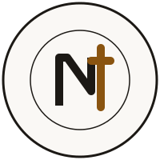

NLTAG logo: three directions for review
Draft concepts only (November 2026). Nothing replaces the live text wordmark until the owner chooses a direction and approves the final artwork. Colours come from the approved Phase 1 palette (ink, amber 700, green 700 on paper). Each mark is tested from 16 px (browser tab) to signage size. None copies another organisation's emblem. Next step after a choice: refined vector, favicon set, social preview image, and Tamil/English lockups for the header and print.
A. Dawn
A sun rising over the horizon, with the cross formed in the light. Echoes "new life" and the hero's dawn (Vaigarai) colours; quiet and warm, reads well in one colour.
B. Bilingual seal
A round seal carrying the full Tamil and English names for print, banners and the church entrance; the inner N-and-cross monogram is used alone on screens and at small sizes.

32 pxC. Sprout cross
A cross whose foot opens into two leaves: growth and new life. The most distinctive at small sizes; green adds warmth without a gradient.